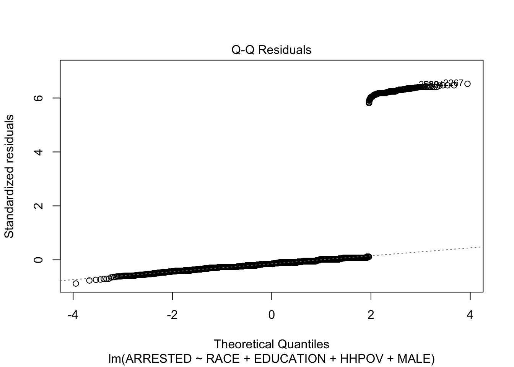
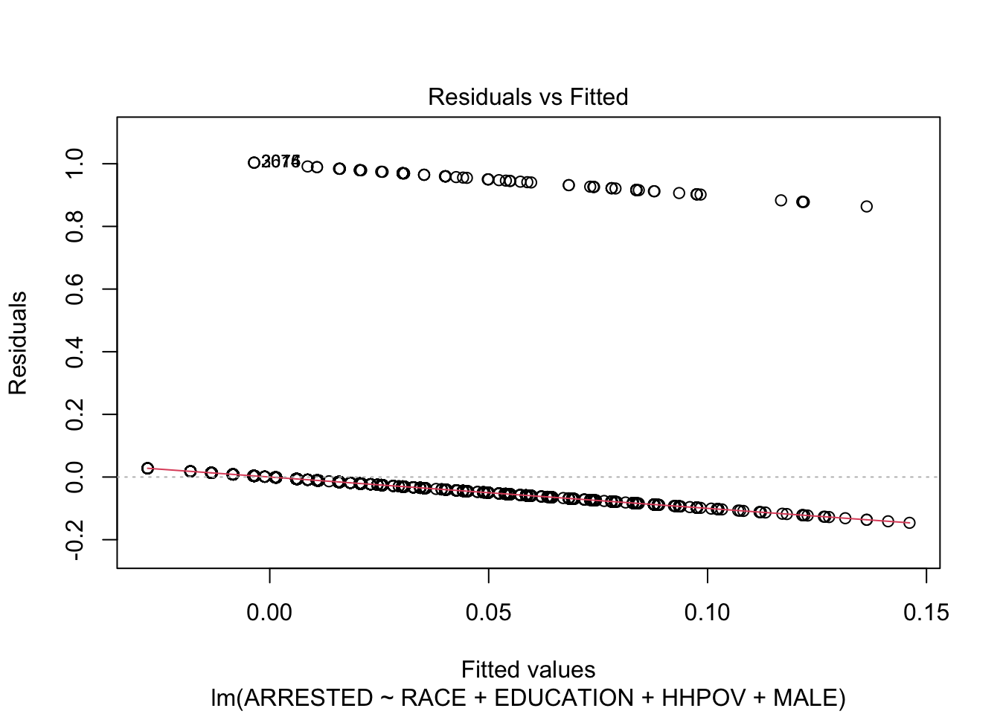
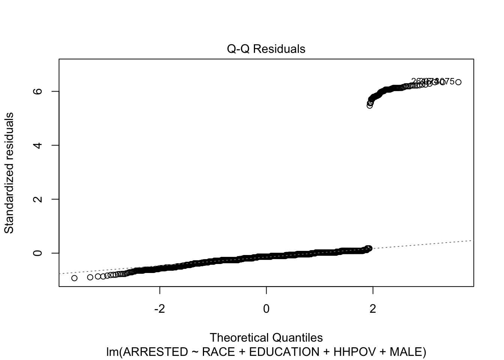
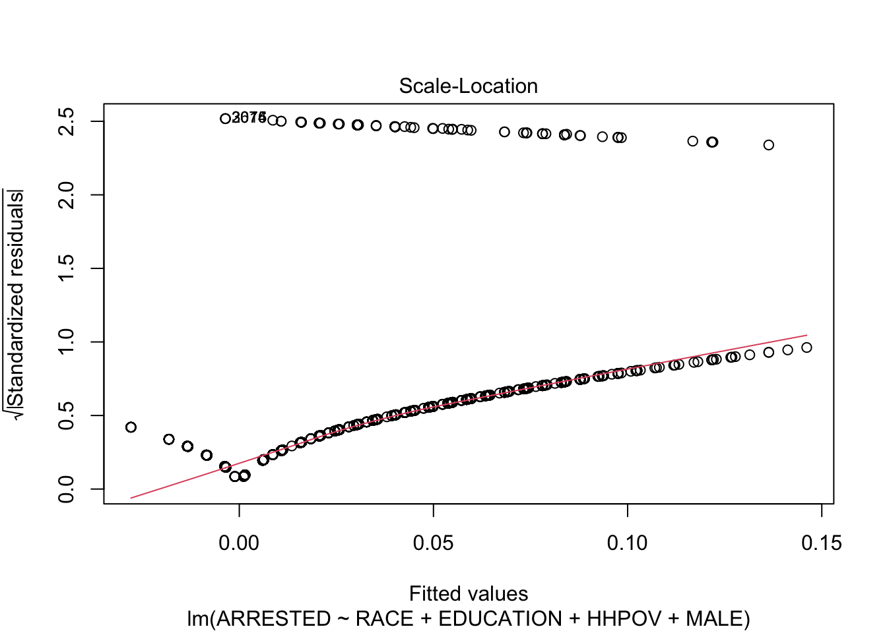
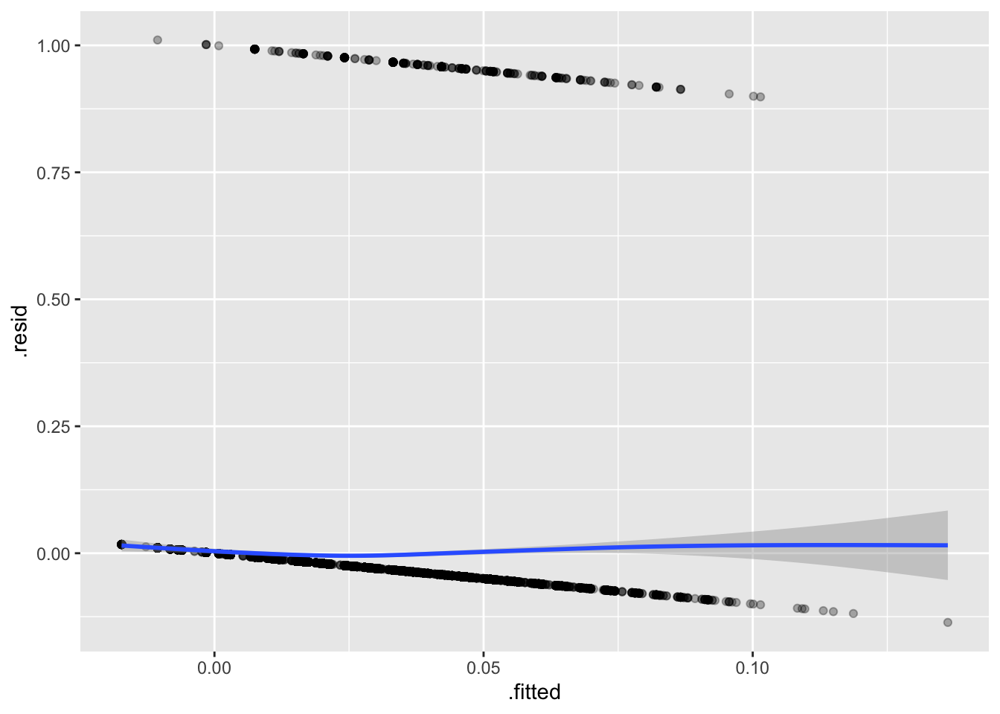
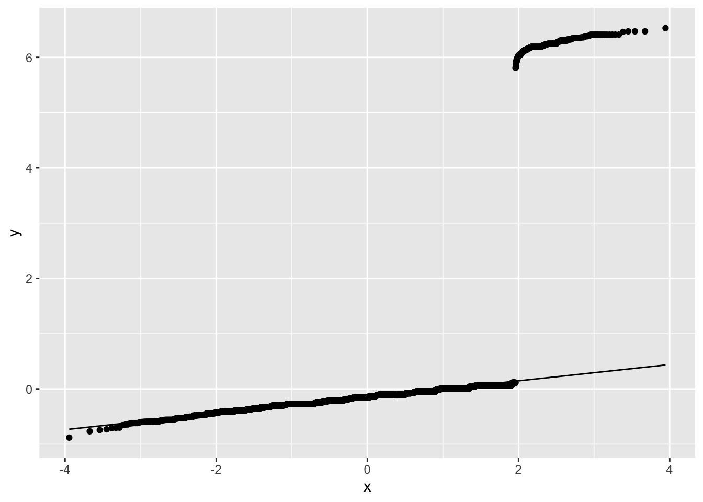
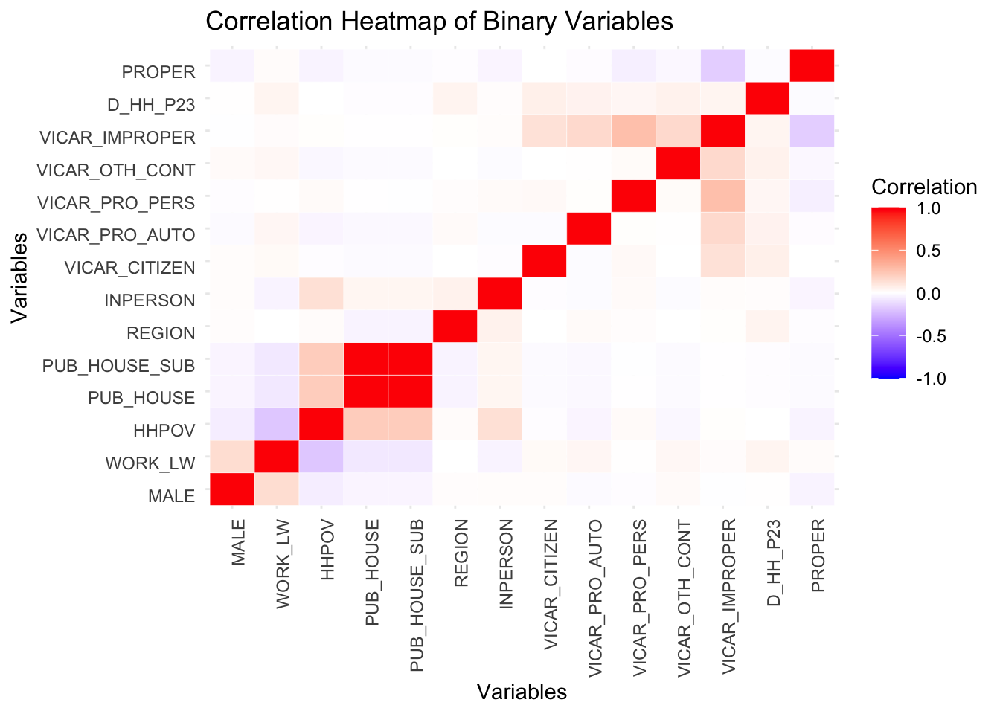
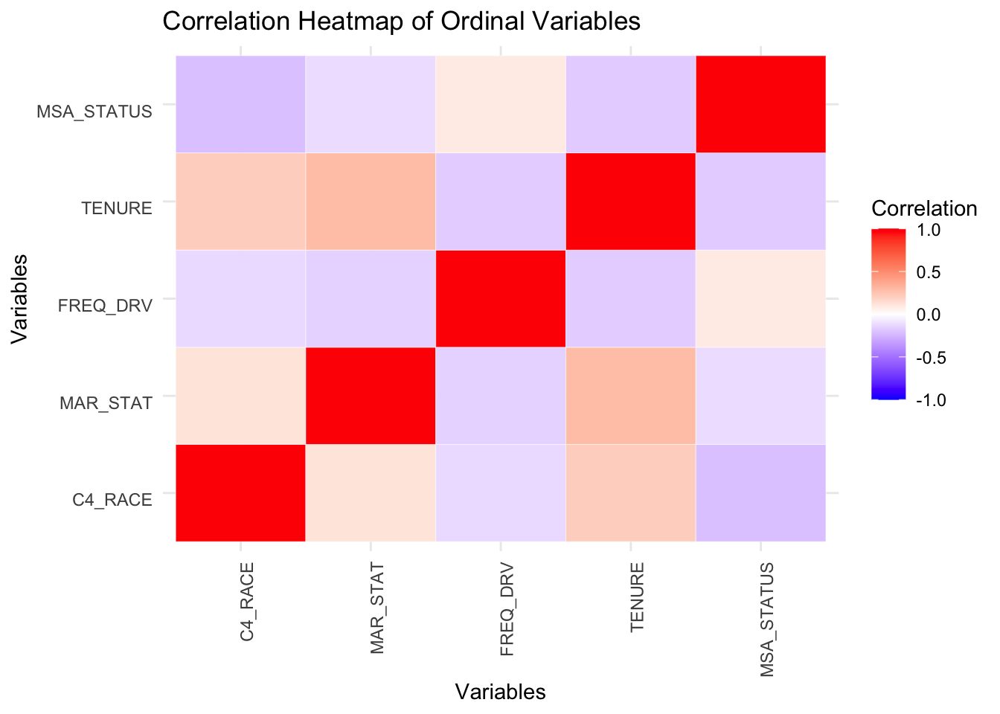
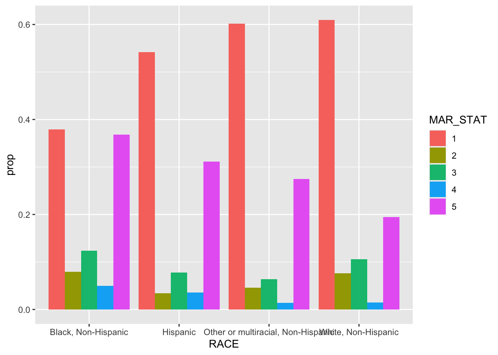

suppressPackageStartupMessages(library(tidyverse))filtered <- read_rds("dataset/police_interaction.rds")create_barplot <- function(data, col_name) {
ggplot(data, aes_string(x = col_name)) +
geom_bar(fill = "skyblue", color = "black") +
labs(title = paste("Barplot of", col_name),
x = col_name,
y = "Count") +
theme_minimal() +
theme(axis.text.x = element_text(angle = 45, hjust = 1))
}
reason_key = c("Out of universe/missing", "Accident", "Traffic stop-driver", "Traffic stop-passenger", "Rsp reported crime", "Police assistance", "Police investigation", "Police suspected rsp", "Other reason")
filtered |>
group_by(RACE) |>
mutate(
reason_text = reason_key[REASON + 1]
) |>
ggplot(aes(x = REASON, fill = reason_text)) +
geom_bar(show.legend = TRUE) +
theme_minimal() +
facet_wrap(~RACE) 
reason_key = c("Accident", "Traffic stop-driver", "Traffic stop-passenger", "Rsp reported crime", "Police assistance", "Police investigation", "Police suspected rsp", "Other reason")
# filtered_reason <- filtered %>%
# count(RACE , wt = reason_key, name = "ny")
# filtered |>
# group_by(RACE) |>
# filter(REASON > 0) |>
# mutate(
# reason_text = reason_key[REASON + 1]
# ) |>
# ggplot(aes(x = REASON, fill = reason_text)) +
# geom_bar(show.legend = TRUE) +
# theme_minimal() +
# facet_wrap(~RACE)
filtered |>
filter(REASON > 0) |>
ggplot(aes(x = as.factor(REASON), fill = as.factor(RACE)))+
geom_bar(position = "fill") +
labs(title = "Proportion of Reasons for Traffic Stop by Race", x = "Reason: \n1 = Accident\n2 = Traffic stop-driver\n3 = Traffic stop-passenger\n4 = Rsp reported crime\n5 = Police assistance\n6 = Police investigation\n7 = Police suspected rsp\n8 = Other reason", y = "Proportion", fill = "Race") 
#scale_fill_discrete(name = "Race")
# ggplot(aes(x = REASON, y = after_stat(prop), fill = reason_text, group = reason_text)) +
# geom_bar(show.legend = TRUE, color = "black", position = "dodge") +
# theme_minimal() +
# theme(legend = element_text("Reason for traffic stop"))
#theme(legend.title = element_text(hjust = 1))
filtered |>
filter(REASON > 0) |>
ggplot(aes(x = RACE, fill = as.factor(REASON))) +
geom_bar(position = "fill") +
theme(axis.text.x = element_text(angle = 45, hjust = 1)) +
labs(title = "Proportion of Reasons for Traffic Stop by Race")filtered |>
filter(!is.na(ARRESTED)) |>
ggplot(aes(x = as.factor(RACE), fill = as.factor(ARRESTED))) +
geom_bar(position = "fill") +
labs(title = "Proportion of Arrests by Race", x = "Race", y = "Arrested (0 = No, 1 = Yes)", fill = "Arrested")
filtered |>
filter(!is.na(ARRESTED)) |>
group_by(RACE) |>
summarize(
arrest_proportion = sum(ARRESTED = 1) / n()
) |>
ggplot(aes(x = RACE, y = arrest_proportion, fill = RACE)) +
geom_bar(stat = "identity") +
theme(axis.text.x = element_text(angle = 45, hjust = 1))ggplot(filtered, aes(x = as.factor(RACE), fill = as.factor(CONTACT))) +
geom_bar(position = "fill") +
labs(title = "Proportion of Race by Police Contact", x = "Race", y = "Police Contact", fill = "Police Contact") +
scale_x_discrete(labels = c("0" = "No", "1" = "Yes")) +
scale_y_continuous(labels = scales::percent)
ggplot(filtered, aes(x = as.factor(C_CONTCT), fill = as.factor(RACE))) +
geom_bar(position = "fill") +
labs(title = "Proportion of Contact Type by Race", x = "Contact Type", y = "Proportion", fill = "Race") +
scale_x_discrete(labels = c("0" = "No contact",
"1" = "Citizen-initiated contact",
"2" = "Vehicle stop",
"3" = "Suspect-related contact",
"4" = "Other police contact")) +
scale_y_continuous(labels = scales::percent)
library(tidymodels)── Attaching packages ────────────────────────────────────── tidymodels 1.2.0 ──✔ broom 1.0.6 ✔ rsample 1.2.1
✔ dials 1.3.0 ✔ tune 1.2.1
✔ infer 1.0.7 ✔ workflows 1.1.4
✔ modeldata 1.4.0 ✔ workflowsets 1.1.0
✔ parsnip 1.2.1 ✔ yardstick 1.3.1
✔ recipes 1.1.0 ── Conflicts ───────────────────────────────────────── tidymodels_conflicts() ──
✖ scales::discard() masks purrr::discard()
✖ dplyr::filter() masks stats::filter()
✖ recipes::fixed() masks stringr::fixed()
✖ dplyr::lag() masks stats::lag()
✖ yardstick::spec() masks readr::spec()
✖ recipes::step() masks stats::step()
• Learn how to get started at https://www.tidymodels.org/start/split <- initial_split(filtered, prop = .8) #good way to keep yourself honest. splits it by prop % being in training, 1-prop being test
training<- training(split)
testing <- testing(split)
predict_filtered <- training |>
filter(!is.na(ARRESTED) & !is.na(RACE) & !is.na(EDUCATION) & !is.na(HHPOV) & !is.na(MALE))
mod1 <- lm(ARRESTED ~ RACE + EDUCATION + HHPOV + MALE, predict_filtered)
summary(mod1)
Call:
lm(formula = ARRESTED ~ RACE + EDUCATION + HHPOV + MALE, data = predict_filtered)
Residuals:
Min 1Q Median 3Q Max
-0.13624 -0.03826 -0.02416 -0.00749 1.01057
Coefficients:
Estimate Std. Error t value Pr(>|t|)
(Intercept) 0.0919267 0.0091409 10.057 < 2e-16
RACEHispanic -0.0175393 0.0065350 -2.684 0.007286
RACEOther or multiracial, Non-Hispanic -0.0279441 0.0084739 -3.298 0.000978
RACEWhite, Non-Hispanic -0.0212601 0.0050492 -4.211 2.56e-05
EDUCATION -0.0045130 0.0005618 -8.033 1.03e-15
HHPOV 0.0186164 0.0045578 4.084 4.44e-05
MALE 0.0257008 0.0027767 9.256 < 2e-16
(Intercept) ***
RACEHispanic **
RACEOther or multiracial, Non-Hispanic ***
RACEWhite, Non-Hispanic ***
EDUCATION ***
HHPOV ***
MALE ***
---
Signif. codes: 0 '***' 0.001 '**' 0.01 '*' 0.05 '.' 0.1 ' ' 1
Residual standard error: 0.1548 on 12517 degrees of freedom
Multiple R-squared: 0.01701, Adjusted R-squared: 0.01654
F-statistic: 36.1 on 6 and 12517 DF, p-value: < 2.2e-16plot(mod1)


predict_filtered_test <- testing |>
filter(!is.na(ARRESTED) & !is.na(RACE) & !is.na(EDUCATION) & !is.na(HHPOV) & !is.na(MALE))
mod2 <- lm(ARRESTED ~ RACE + EDUCATION + HHPOV + MALE, predict_filtered_test)
summary(mod2)
Call:
lm(formula = ARRESTED ~ RACE + EDUCATION + HHPOV + MALE, data = predict_filtered_test)
Residuals:
Min 1Q Median 3Q Max
-0.14612 -0.04013 -0.02057 -0.00620 1.00358
Coefficients:
Estimate Std. Error t value Pr(>|t|)
(Intercept) 0.112627 0.018428 6.112 1.10e-09
RACEHispanic -0.052485 0.012797 -4.101 4.21e-05
RACEOther or multiracial, Non-Hispanic -0.025728 0.016726 -1.538 0.124
RACEWhite, Non-Hispanic -0.037945 0.009704 -3.910 9.41e-05
EDUCATION -0.004891 0.001140 -4.290 1.84e-05
HHPOV 0.043587 0.009437 4.619 4.02e-06
MALE 0.024149 0.005650 4.274 1.97e-05
(Intercept) ***
RACEHispanic ***
RACEOther or multiracial, Non-Hispanic
RACEWhite, Non-Hispanic ***
EDUCATION ***
HHPOV ***
MALE ***
---
Signif. codes: 0 '***' 0.001 '**' 0.01 '*' 0.05 '.' 0.1 ' ' 1
Residual standard error: 0.1583 on 3171 degrees of freedom
Multiple R-squared: 0.0278, Adjusted R-squared: 0.02596
F-statistic: 15.11 on 6 and 3171 DF, p-value: < 2.2e-16plot(mod2)



# predict_filtered <- filtered |>
# filter(!is.na(ARRESTED) & !is.na(HHPOV) & !is.na(MALE))
#
# mod2 <- lm(ARRESTED ~ HHPOV + MALE, predict_filtered)
# summary(mod2)
# plot(mod2)
# predict_filtered <- filtered |>
# filter(!is.na(ARRESTED) & !is.na(RACE))
#
# mod2 <- lm(ARRESTED ~ RACE, predict_filtered)
# summary(mod2)
# plot(mod2)
# filtered |>
# # ggplot(aes(x = C4_RACE, y = PROPER)) +
# # geom_quantile()
#
# ggplot(aes(x = C4_RACE, y = PROPER)) +
# geom_broom::augment(mod1)# A tibble: 12,524 × 11
ARRESTED RACE EDUCATION HHPOV MALE .fitted .resid .hat .sigma .cooksd
<dbl> <chr> <dbl> <dbl> <dbl> <dbl> <dbl> <dbl> <dbl> <dbl>
1 0 Whit… 16 0 0 -0.00154 0.00154 2.32e-4 0.155 3.29e-9
2 0 Whit… 12 1 1 0.0608 -0.0608 9.13e-4 0.155 2.02e-5
3 0 Whit… 10 0 1 0.0512 -0.0512 4.06e-4 0.155 6.35e-6
4 0 Whit… 11 0 0 0.0210 -0.0210 3.30e-4 0.155 8.69e-7
5 0 Whit… 14 0 0 0.00749 -0.00749 1.92e-4 0.155 6.43e-8
6 0 Othe… 14 0 1 0.0265 -0.0265 2.10e-3 0.155 8.84e-6
7 0 Whit… 12 0 1 0.0422 -0.0422 2.43e-4 0.155 2.59e-6
8 0 Whit… 14 0 0 0.00749 -0.00749 1.92e-4 0.155 6.43e-8
9 0 Whit… 11 0 0 0.0210 -0.0210 3.30e-4 0.155 8.69e-7
10 0 Whit… 14 0 1 0.0332 -0.0332 1.86e-4 0.155 1.22e-6
# ℹ 12,514 more rows
# ℹ 1 more variable: .std.resid <dbl>ggplot(mod1, aes(x = .fitted, y=.resid)) +
geom_point(alpha = 0.3) +
geom_smooth()`geom_smooth()` using method = 'gam' and formula = 'y ~ s(x, bs = "cs")'
ggplot(mod1, aes(sample = rstandard(mod1))) +
geom_qq() +
stat_qq_line()
library(tidyverse)
library(reshape2)
Attaching package: 'reshape2'The following object is masked from 'package:tidyr':
smiths# Categorizing variables based on their types
#removed "CONTACT" and "ERROR" due to "Warning in cor(numeric_data, use = "complete.obs") : the standard deviation is zero" error
binary_columns <- c("MALE", "WORK_LW", "HHPOV", "PUB_HOUSE", "PUB_HOUSE_SUB", "REGION", "INPERSON", "VICAR_CITIZEN", "VICAR_PRO_AUTO", "VICAR_PRO_PERS", "VICAR_OTH_CONT", "VICAR_IMPROPER", "D_HH_P23", "PROPER")
ordinal_columns <- c("C4_RACE", "MAR_STAT", "FREQ_DRV", "TENURE", "MSA_STATUS")
continuous_columns <- c("AGE", "EDUCATION", "EDUCATION_SUB", "NUM_MOVES", "NUM_CONT", "HH_SIZE", "PPCS_YEAR", "N_HH_P1", "N_PERS_P1", "NUM_CITIZEN_HH", "NUM_PRO_AUTO_HH", "NUM_PRO_PERS_HH", "NUM_OTH_CONT_HH", "NUM_IMPROPER_HH")
# Selecting data by type
binary_data <- filtered %>%
select(all_of(binary_columns)) %>%
select(where(is.numeric))
ordinal_data <- filtered %>%
select(all_of(ordinal_columns)) %>%
select(where(is.numeric))
continuous_data <- filtered %>%
select(all_of(continuous_columns)) %>%
select(where(is.numeric))
# Calculating correlation matrices with appropriate methods
cor_binary <- cor(binary_data, use = "pairwise.complete.obs", method = "pearson")
cor_ordinal <- cor(ordinal_data, use = "pairwise.complete.obs", method = "spearman")
cor_continuous <- cor(continuous_data, use = "pairwise.complete.obs", method = "pearson")
# Creating a heatmap function
plot_heatmap <- function(cor_matrix, title) {
cor_melted <- melt(cor_matrix)
ggplot(cor_melted, aes(Var1, Var2, fill = value)) +
geom_tile(color = "white") +
scale_fill_gradient2(low = "blue", high = "red", mid = "white",
midpoint = 0, limit = c(-1, 1), name = "Correlation") +
labs(title = title, x = "Variables", y = "Variables") +
theme_minimal() +
theme(axis.text.x = element_text(angle = 90, hjust = 1),
axis.text.y = element_text(angle = 0, vjust = 1))
}
# Plotting heatmaps for each correlation matrix
if (ncol(binary_data) > 1) {
print(plot_heatmap(cor_binary, "Correlation Heatmap of Binary Variables"))
}
if (ncol(ordinal_data) > 1) {
print(plot_heatmap(cor_ordinal, "Correlation Heatmap of Ordinal Variables"))
}
if (ncol(continuous_data) > 1) {
print(plot_heatmap(cor_continuous, "Correlation Heatmap of Continuous Variables"))
}
Plot of the marriage data for different races
marriageData <- filtered |>
filter(!is.na(MAR_STAT)) |>
group_by(RACE) |>
mutate(totalPerRace = n()) |>
ungroup() |>
group_by(RACE, MAR_STAT) |>
select(RACE, MAR_STAT, totalPerRace) |>
mutate(numPerMarStatRace = n()) |>
filter(row_number()==1) |>
mutate(prop = numPerMarStatRace/totalPerRace) |>
select(-totalPerRace, -numPerMarStatRace) |>
mutate(MAR_STAT = as.factor(MAR_STAT))
ggplot(data = marriageData) +
geom_bar(mapping = aes(x = RACE, fill = MAR_STAT, y = prop),
stat = "identity",
position = "dodge")